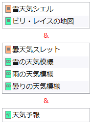

デッキ>手札検証:設定
初期手札の内容を検証する機能の、条件を設定するためのタブです。
説明
要素をクリックすると説明が表示されます。手札リストの詳細

-
手札リストは任意個数のサブリストから構成されます。
- 手札のうち1枚がサブリスト内のいずれかであることを要請します。
-
デッキリストからサブリストの枠内へ項目をドラッグ&ドロップすると、そのカードは該当のサブリストへ追加されます。
- 「OR」ボタンを押した場合も同じ挙動になります。
-
異なるサブリストには同じカードを含めることが可能です。
- 同じカードを含むサブリストが複数ある場合、それはそのカードをその数だけ手札に持っていることを要請します。
- サブリストの数はそのまま必要な手札の枚数に一致します。
-
余白
- 手札リストの内容のうち、サブリストの枠の外である部分は単なる余白です。
- サブリストが複数ある場合、それぞれの間に&が表示されます。
-
デッキリストから余白部分へ項目をドラッグ&ドロップすると、新たなサブリストが作られ、そのカードは新たなサブリストへ追加されます。
- 「AND」ボタンを押した場合も同じ挙動になります。
-
例
- この画像では、1つ目のサブリストは「手札のうち1枚が《雪天気シエル》か《ピリ・レイスの地図》であること」を要請します。
- この画像ではサブリストが3つ存在する、すなわち手札要求3枚という意味になります。
-
この手札リストの「意味」は、以下のようなものになります。
- 手札のうち1枚は《雪天気シエル》か《ピリ・レイスの地図》である。
- 手札のうち1枚は《曇天気スレット》《雪の天気模様》《雨の天気模様》《曇りの天気模様》のいずれかである。
- 手札のうち1枚は《天気予報》である。
- 以上の条件を全て満たす。
-
具体的な手札状況と、この条件が達成されるかどうか
- 《シエル》《スレット》《天気予報》: 達成
- 《シエル》《雪模様》《天気予報》: 達成
- 《スレット》《雪模様》《天気予報》: 不達成
- 《シエル》《シエル》《天気予報》: 不達成
-
「A、B、Cの3枚から重複無しで2枚引きたい」といった条件は、一つの条件項目では実現できません。以下のように複数条件を組み合わせる必要があります。
- 1つ目の条件: [AB] & [C]
- 2つ目の条件: [A] & [B]
- 2つの条件を同じグループにする。